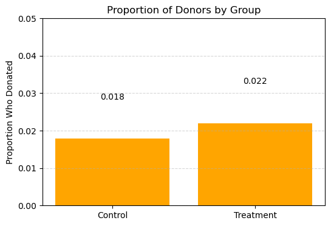
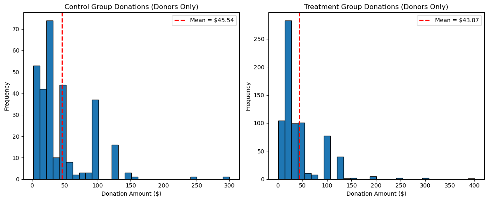
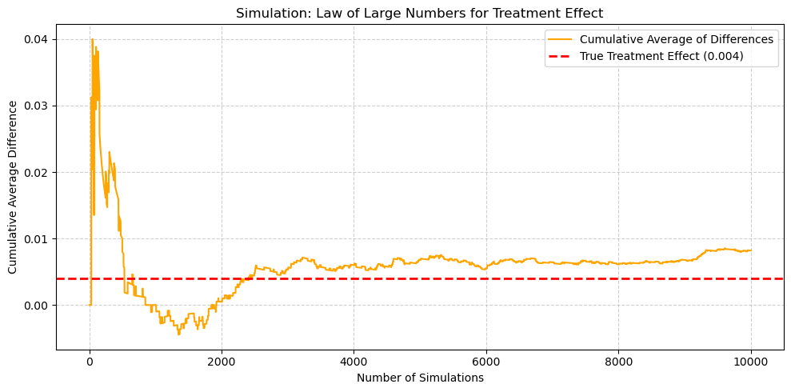
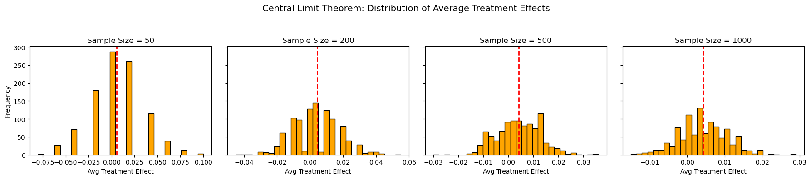

import pandas as pd
import numpy as np
from scipy.stats import ttest_ind
import statsmodels.formula.api as smf
import matplotlib.pyplot as plt
import statsmodels.api as smDescription
df = pd.read_stata("karlan_list_2007.dta")
df.head()| treatment | control | ratio | ratio2 | ratio3 | size | size25 | size50 | size100 | sizeno | ... | redcty | bluecty | pwhite | pblack | page18_39 | ave_hh_sz | median_hhincome | powner | psch_atlstba | pop_propurban | |
|---|---|---|---|---|---|---|---|---|---|---|---|---|---|---|---|---|---|---|---|---|---|
| 0 | 0 | 1 | Control | 0 | 0 | Control | 0 | 0 | 0 | 0 | ... | 0.0 | 1.0 | 0.446493 | 0.527769 | 0.317591 | 2.10 | 28517.0 | 0.499807 | 0.324528 | 1.0 |
| 1 | 0 | 1 | Control | 0 | 0 | Control | 0 | 0 | 0 | 0 | ... | 1.0 | 0.0 | NaN | NaN | NaN | NaN | NaN | NaN | NaN | NaN |
| 2 | 1 | 0 | 1 | 0 | 0 | $100,000 | 0 | 0 | 1 | 0 | ... | 0.0 | 1.0 | 0.935706 | 0.011948 | 0.276128 | 2.48 | 51175.0 | 0.721941 | 0.192668 | 1.0 |
| 3 | 1 | 0 | 1 | 0 | 0 | Unstated | 0 | 0 | 0 | 1 | ... | 1.0 | 0.0 | 0.888331 | 0.010760 | 0.279412 | 2.65 | 79269.0 | 0.920431 | 0.412142 | 1.0 |
| 4 | 1 | 0 | 1 | 0 | 0 | $50,000 | 0 | 1 | 0 | 0 | ... | 0.0 | 1.0 | 0.759014 | 0.127421 | 0.442389 | 1.85 | 40908.0 | 0.416072 | 0.439965 | 1.0 |
5 rows × 51 columns
df.shape(50083, 51)df.describe()| treatment | control | ratio2 | ratio3 | size25 | size50 | size100 | sizeno | askd1 | askd2 | ... | redcty | bluecty | pwhite | pblack | page18_39 | ave_hh_sz | median_hhincome | powner | psch_atlstba | pop_propurban | |
|---|---|---|---|---|---|---|---|---|---|---|---|---|---|---|---|---|---|---|---|---|---|
| count | 50083.000000 | 50083.000000 | 50083.000000 | 50083.000000 | 50083.000000 | 50083.000000 | 50083.000000 | 50083.000000 | 50083.000000 | 50083.000000 | ... | 49978.000000 | 49978.000000 | 48217.000000 | 48047.000000 | 48217.000000 | 48221.000000 | 48209.000000 | 48214.000000 | 48215.000000 | 48217.000000 |
| mean | 0.666813 | 0.333187 | 0.222311 | 0.222211 | 0.166723 | 0.166623 | 0.166723 | 0.166743 | 0.222311 | 0.222291 | ... | 0.510245 | 0.488715 | 0.819599 | 0.086710 | 0.321694 | 2.429012 | 54815.700533 | 0.669418 | 0.391661 | 0.871968 |
| std | 0.471357 | 0.471357 | 0.415803 | 0.415736 | 0.372732 | 0.372643 | 0.372732 | 0.372750 | 0.415803 | 0.415790 | ... | 0.499900 | 0.499878 | 0.168560 | 0.135868 | 0.103039 | 0.378105 | 22027.316665 | 0.193405 | 0.186599 | 0.258633 |
| min | 0.000000 | 0.000000 | 0.000000 | 0.000000 | 0.000000 | 0.000000 | 0.000000 | 0.000000 | 0.000000 | 0.000000 | ... | 0.000000 | 0.000000 | 0.009418 | 0.000000 | 0.000000 | 0.000000 | 5000.000000 | 0.000000 | 0.000000 | 0.000000 |
| 25% | 0.000000 | 0.000000 | 0.000000 | 0.000000 | 0.000000 | 0.000000 | 0.000000 | 0.000000 | 0.000000 | 0.000000 | ... | 0.000000 | 0.000000 | 0.755845 | 0.014729 | 0.258311 | 2.210000 | 39181.000000 | 0.560222 | 0.235647 | 0.884929 |
| 50% | 1.000000 | 0.000000 | 0.000000 | 0.000000 | 0.000000 | 0.000000 | 0.000000 | 0.000000 | 0.000000 | 0.000000 | ... | 1.000000 | 0.000000 | 0.872797 | 0.036554 | 0.305534 | 2.440000 | 50673.000000 | 0.712296 | 0.373744 | 1.000000 |
| 75% | 1.000000 | 1.000000 | 0.000000 | 0.000000 | 0.000000 | 0.000000 | 0.000000 | 0.000000 | 0.000000 | 0.000000 | ... | 1.000000 | 1.000000 | 0.938827 | 0.090882 | 0.369132 | 2.660000 | 66005.000000 | 0.816798 | 0.530036 | 1.000000 |
| max | 1.000000 | 1.000000 | 1.000000 | 1.000000 | 1.000000 | 1.000000 | 1.000000 | 1.000000 | 1.000000 | 1.000000 | ... | 1.000000 | 1.000000 | 1.000000 | 0.989622 | 0.997544 | 5.270000 | 200001.000000 | 1.000000 | 1.000000 | 1.000000 |
8 rows × 48 columns
df.dtypestreatment int8
control int8
ratio category
ratio2 int8
ratio3 int8
size category
size25 int8
size50 int8
size100 int8
sizeno int8
ask category
askd1 int8
askd2 int8
askd3 int8
ask1 int16
ask2 int16
ask3 int16
amount float32
gave int8
amountchange float32
hpa float32
ltmedmra int8
freq int16
years float64
year5 int8
mrm2 float64
dormant int8
female float64
couple float64
state50one int8
nonlit float64
cases float64
statecnt float32
stateresponse float32
stateresponset float32
stateresponsec float32
stateresponsetminc float32
perbush float32
close25 float64
red0 float64
blue0 float64
redcty float64
bluecty float64
pwhite float32
pblack float32
page18_39 float32
ave_hh_sz float32
median_hhincome float64
powner float32
psch_atlstba float32
pop_propurban float32
dtype: objectBalance Test
# Variables to test
variables = ["mrm2", "freq", "years", "female", "ave_hh_sz"]
# Store results
results = []
for var in variables:
temp_df = df[["treatment", var]].dropna()
# T-test
treatment_vals = temp_df[temp_df["treatment"] == 1][var]
control_vals = temp_df[temp_df["treatment"] == 0][var]
t_stat, t_pval = ttest_ind(treatment_vals, control_vals)
# Regression
model = smf.ols(f"{var} ~ treatment", data=temp_df).fit()
coef = model.params["treatment"]
reg_pval = model.pvalues["treatment"]
# Means & stds
mean_t = treatment_vals.mean()
mean_c = control_vals.mean()
std_t = treatment_vals.std()
std_c = control_vals.std()
results.append({
"Variable": var,
"Mean (Treatment)": round(mean_t, 3),
"Mean (Control)": round(mean_c, 3),
"Std (Treatment)": round(std_t, 3),
"Std (Control)": round(std_c, 3),
"T-test p-value": round(t_pval, 4),
"Reg Coef": round(coef, 4),
"Reg p-value": round(reg_pval, 4)
})
# Convert to DataFrame
pd.set_option('display.max_columns', None)
balance_results = pd.DataFrame(results)
print(balance_results) Variable Mean (Treatment) Mean (Control) Std (Treatment) \
0 mrm2 13.012 12.998 12.086
1 freq 8.035 8.047 11.390
2 years 6.078 6.136 5.442
3 female 0.275 0.283 0.447
4 ave_hh_sz 2.430 2.427 0.378
Std (Control) T-test p-value Reg Coef Reg p-value
0 12.074 0.9049 0.0137 0.9049
1 11.404 0.9117 -0.0120 0.9117
2 5.625 0.2700 -0.0575 0.2700
3 0.450 0.0787 -0.0075 0.0787
4 0.379 0.4098 0.0030 0.4098 Experimental Results
Charitable Contribution Made
# Calculate the mean of 'gave' for control and treatment
donation_rates = df.groupby("treatment")["gave"].mean()
# Create labels and values for the plot
labels = ["Control", "Treatment"]
rates = [donation_rates[0], donation_rates[1]]
# Plot
plt.figure(figsize=(6, 4))
plt.bar(labels, rates, color='orange')
plt.title("Proportion of Donors by Group")
plt.ylabel("Proportion Who Donated")
plt.ylim(0, 0.05)
plt.grid(axis='y', linestyle='--', alpha=0.5)
# Add data labels on top of bars
for i, rate in enumerate(rates):
plt.text(i, rate + 0.01, f"{rate:.3f}", ha='center', va='bottom')
plt.show()
# Drop any missing values in relevant columns
df_clean = df.dropna(subset=["gave", "treatment"])
# --- T-TEST ---
gave_treatment = df_clean[df_clean["treatment"] == 1]["gave"]
gave_control = df_clean[df_clean["treatment"] == 0]["gave"]
t_stat, p_val = ttest_ind(gave_treatment, gave_control)
# --- LINEAR REGRESSION ---
model = smf.ols("gave ~ treatment", data=df_clean).fit()
coef = model.params["treatment"]
reg_pval = model.pvalues["treatment"]
# --- PRINT RESULTS ---
print("T-Test Results:")
print(f" t-statistic = {t_stat:.4f}")
print(f" p-value = {p_val:.4f}")
print("\nLinear Regression Results:")
print(f" Coefficient = {coef:.4f}")
print(f" p-value = {reg_pval:.4f}")
# Interpretation in plain English
if p_val < 0.05:
print("\nInterpretation:")
print(" The treatment group was significantly more likely to donate than the control group.")
print(" This suggests that the experimental message or treatment had a real behavioral impact.")
else:
print("\nInterpretation:")
print(" There is no statistically significant difference in donation rates between groups.")T-Test Results:
t-statistic = 3.1014
p-value = 0.0019
Linear Regression Results:
Coefficient = 0.0042
p-value = 0.0019
Interpretation:
The treatment group was significantly more likely to donate than the control group.
This suggests that the experimental message or treatment had a real behavioral impact.df_probit = df.dropna(subset=["gave", "treatment"])
# Define independent (X) and dependent (y) variables
X = sm.add_constant(df_probit["treatment"]) # Add constant (intercept)
y = df_probit["gave"]
# Fit the probit model
probit_model = sm.Probit(y, X).fit()
# Print summary
print(probit_model.summary())Optimization terminated successfully.
Current function value: 0.100443
Iterations 7
Probit Regression Results
==============================================================================
Dep. Variable: gave No. Observations: 50083
Model: Probit Df Residuals: 50081
Method: MLE Df Model: 1
Date: Wed, 23 Apr 2025 Pseudo R-squ.: 0.0009783
Time: 21:32:46 Log-Likelihood: -5030.5
converged: True LL-Null: -5035.4
Covariance Type: nonrobust LLR p-value: 0.001696
==============================================================================
coef std err z P>|z| [0.025 0.975]
------------------------------------------------------------------------------
const -2.1001 0.023 -90.073 0.000 -2.146 -2.054
treatment 0.0868 0.028 3.113 0.002 0.032 0.141
==============================================================================Differences between Match Rates
# Clean and filter relevant data
df_ratio_test = df.dropna(subset=["gave", "ratio2", "ratio3"])
# Define match ratio groups
group_1_to_1 = df_ratio_test[(df_ratio_test["ratio2"] == 0) & (df_ratio_test["ratio3"] == 0)]["gave"]
group_2_to_1 = df_ratio_test[df_ratio_test["ratio2"] == 1]["gave"]
group_3_to_1 = df_ratio_test[df_ratio_test["ratio3"] == 1]["gave"]
# T-tests
t_stat_2, p_val_2 = ttest_ind(group_1_to_1, group_2_to_1)
t_stat_3, p_val_3 = ttest_ind(group_1_to_1, group_3_to_1)
# Print results
print("T-Test: 2:1 Match vs 1:1 Match")
print(f" t-statistic = {t_stat_2:.4f}")
print(f" p-value = {p_val_2:.4f}\n")
print("T-Test: 3:1 Match vs 1:1 Match")
print(f" t-statistic = {t_stat_3:.4f}")
print(f" p-value = {p_val_3:.4f}")
# Interpretation
print("\nInterpretation:")
if p_val_2 < 0.05 or p_val_3 < 0.05:
print("There is a statistically significant difference in donation rates between groups.")
print("However, the direction of the effect shows that higher match ratios (2:1 and 3:1) do NOT increase donation likelihood.")
print("This supports the paper's claim on page 8 that 'larger match ratios... had no additional impact.'")
else:
print("There is no statistically significant difference between the groups.")
print("This confirms that increasing the match ratio beyond 1:1 does not lead to higher donation rates, as the authors suggest.")T-Test: 2:1 Match vs 1:1 Match
t-statistic = -2.3020
p-value = 0.0213
T-Test: 3:1 Match vs 1:1 Match
t-statistic = -2.3636
p-value = 0.0181
Interpretation:
There is a statistically significant difference in donation rates between groups.
However, the direction of the effect shows that higher match ratios (2:1 and 3:1) do NOT increase donation likelihood.
This supports the paper's claim on page 8 that 'larger match ratios... had no additional impact.'# Create 'ratio1' dummy: 1 if both ratio2 and ratio3 are 0 (i.e., it's a 1:1 match)
df_ratio_test["ratio1"] = ((df_ratio_test["ratio2"] == 0) & (df_ratio_test["ratio3"] == 0)).astype(int)
# Run regression
model = smf.ols("gave ~ ratio1 + ratio2 + ratio3", data=df_ratio_test).fit()
# Display regression results
print(model.summary()) OLS Regression Results
==============================================================================
Dep. Variable: gave R-squared: 0.000
Model: OLS Adj. R-squared: 0.000
Method: Least Squares F-statistic: 2.742
Date: Wed, 23 Apr 2025 Prob (F-statistic): 0.0416
Time: 21:37:36 Log-Likelihood: 26629.
No. Observations: 50083 AIC: -5.325e+04
Df Residuals: 50079 BIC: -5.321e+04
Df Model: 3
Covariance Type: nonrobust
==============================================================================
coef std err t P>|t| [0.025 0.975]
------------------------------------------------------------------------------
Intercept 1.229e+10 1.54e+11 0.080 0.936 -2.89e+11 3.14e+11
ratio1 -1.229e+10 1.54e+11 -0.080 0.936 -3.14e+11 2.89e+11
ratio2 -1.229e+10 1.54e+11 -0.080 0.936 -3.14e+11 2.89e+11
ratio3 -1.229e+10 1.54e+11 -0.080 0.936 -3.14e+11 2.89e+11
==============================================================================
Omnibus: 59815.680 Durbin-Watson: 2.005
Prob(Omnibus): 0.000 Jarque-Bera (JB): 4317584.682
Skew: 6.741 Prob(JB): 0.00
Kurtosis: 46.443 Cond. No. 5.80e+14
==============================================================================
Notes:
[1] Standard Errors assume that the covariance matrix of the errors is correctly specified.
[2] The smallest eigenvalue is 2.13e-25. This might indicate that there are
strong multicollinearity problems or that the design matrix is singular.Size of Charitable Contribution
# Drop missing values from the donation amount and treatment columns
df_amount = df.dropna(subset=["amount", "treatment"])
# --- T-TEST ---
donation_treatment = df_amount[df_amount["treatment"] == 1]["amount"]
donation_control = df_amount[df_amount["treatment"] == 0]["amount"]
t_stat, p_val = ttest_ind(donation_treatment, donation_control)
print("T-Test: Donation Amount by Treatment")
print(f" t-statistic = {t_stat:.4f}")
print(f" p-value = {p_val:.4f}\n")
# --- LINEAR REGRESSION ---
model = smf.ols("amount ~ treatment", data=df_amount).fit()
print("Linear Regression: Donation Amount ~ Treatment")
print(model.summary())T-Test: Donation Amount by Treatment
t-statistic = 1.8605
p-value = 0.0628
Linear Regression: Donation Amount ~ Treatment
OLS Regression Results
==============================================================================
Dep. Variable: amount R-squared: 0.000
Model: OLS Adj. R-squared: 0.000
Method: Least Squares F-statistic: 3.461
Date: Wed, 23 Apr 2025 Prob (F-statistic): 0.0628
Time: 21:38:21 Log-Likelihood: -1.7946e+05
No. Observations: 50083 AIC: 3.589e+05
Df Residuals: 50081 BIC: 3.589e+05
Df Model: 1
Covariance Type: nonrobust
==============================================================================
coef std err t P>|t| [0.025 0.975]
------------------------------------------------------------------------------
Intercept 0.8133 0.067 12.063 0.000 0.681 0.945
treatment 0.1536 0.083 1.861 0.063 -0.008 0.315
==============================================================================
Omnibus: 96861.113 Durbin-Watson: 2.008
Prob(Omnibus): 0.000 Jarque-Bera (JB): 240735713.635
Skew: 15.297 Prob(JB): 0.00
Kurtosis: 341.269 Cond. No. 3.23
==============================================================================
Notes:
[1] Standard Errors assume that the covariance matrix of the errors is correctly specified.If the t-test or regression shows a statistically significant difference, it means that the treatment influenced the size of donations, not just whether people donated.
If not significant, then the treatment increased response rate, but not donation size, which aligns with the “extensive margin” effect described in behavioral economics.
# Filter to people who made a donation (amount > 0)
df_positive_donors = df[(df["amount"] > 0) & df["treatment"].notna()]
# --- T-TEST ---
donation_treatment = df_positive_donors[df_positive_donors["treatment"] == 1]["amount"]
donation_control = df_positive_donors[df_positive_donors["treatment"] == 0]["amount"]
t_stat, p_val = ttest_ind(donation_treatment, donation_control)
print("T-Test (Donors Only): Donation Amount by Treatment")
print(f" t-statistic = {t_stat:.4f}")
print(f" p-value = {p_val:.4f}\n")
# --- REGRESSION ---
model = smf.ols("amount ~ treatment", data=df_positive_donors).fit()
print("Linear Regression (Donors Only): Donation Amount ~ Treatment")
print(model.summary())T-Test (Donors Only): Donation Amount by Treatment
t-statistic = -0.5808
p-value = 0.5615
Linear Regression (Donors Only): Donation Amount ~ Treatment
OLS Regression Results
==============================================================================
Dep. Variable: amount R-squared: 0.000
Model: OLS Adj. R-squared: -0.001
Method: Least Squares F-statistic: 0.3374
Date: Wed, 23 Apr 2025 Prob (F-statistic): 0.561
Time: 21:44:20 Log-Likelihood: -5326.8
No. Observations: 1034 AIC: 1.066e+04
Df Residuals: 1032 BIC: 1.067e+04
Df Model: 1
Covariance Type: nonrobust
==============================================================================
coef std err t P>|t| [0.025 0.975]
------------------------------------------------------------------------------
Intercept 45.5403 2.423 18.792 0.000 40.785 50.296
treatment -1.6684 2.872 -0.581 0.561 -7.305 3.968
==============================================================================
Omnibus: 587.258 Durbin-Watson: 2.031
Prob(Omnibus): 0.000 Jarque-Bera (JB): 5623.279
Skew: 2.464 Prob(JB): 0.00
Kurtosis: 13.307 Cond. No. 3.49
==============================================================================
Notes:
[1] Standard Errors assume that the covariance matrix of the errors is correctly specified.This analysis isolates the intensive margin: how much people give once they’ve decided to donate.
If the treatment coefficient is not significant, it suggests the treatment affected whether people give (extensive margin), but not how much they give. If it’s significant, then the treatment changes the amount donated as well.
Yes, the treatment coefficient has a causal interpretation only if random assignment is preserved and we’re not conditioning on post-treatment behavior.
# Keep only donors (amount > 0)
df_donors = df[df["amount"] > 0]
# Split into treatment and control groups
treatment_donors = df_donors[df_donors["treatment"] == 1]["amount"]
control_donors = df_donors[df_donors["treatment"] == 0]["amount"]
# Calculate group means
mean_treatment = treatment_donors.mean()
mean_control = control_donors.mean()
# Plotting
plt.figure(figsize=(12, 5))
# Control group plot
plt.subplot(1, 2, 1)
plt.hist(control_donors, bins=30, edgecolor='black')
plt.axvline(mean_control, color='red', linestyle='dashed', linewidth=2, label=f"Mean = ${mean_control:.2f}")
plt.title("Control Group Donations (Donors Only)")
plt.xlabel("Donation Amount ($)")
plt.ylabel("Frequency")
plt.legend()
# Treatment group plot
plt.subplot(1, 2, 2)
plt.hist(treatment_donors, bins=30, edgecolor='black')
plt.axvline(mean_treatment, color='red', linestyle='dashed', linewidth=2, label=f"Mean = ${mean_treatment:.2f}")
plt.title("Treatment Group Donations (Donors Only)")
plt.xlabel("Donation Amount ($)")
plt.ylabel("Frequency")
plt.legend()
plt.tight_layout()
plt.show()
Law of Large Numbers
# Set seed for reproducibility
np.random.seed(42)
# Simulate 10,000 Bernoulli draws for control (p = 0.018) and treatment (p = 0.022)
control_draws = np.random.binomial(n=1, p=0.018, size=10000)
treatment_draws = np.random.binomial(n=1, p=0.022, size=10000)
# Calculate the differences between treatment and control draws
differences = treatment_draws - control_draws
# Compute the cumulative average of the differences
cumulative_avg = np.cumsum(differences) / np.arange(1, len(differences) + 1)
# Plotting
plt.figure(figsize=(10, 5))
plt.plot(cumulative_avg, color='orange', label='Cumulative Average of Differences')
plt.axhline(y=0.004, color='red', linestyle='--', linewidth=2, label='True Treatment Effect (0.004)')
plt.title("Simulation: Law of Large Numbers for Treatment Effect")
plt.xlabel("Number of Simulations")
plt.ylabel("Cumulative Average Difference")
plt.grid(True, linestyle='--', alpha=0.6)
plt.legend()
plt.tight_layout()
plt.show()
The orange line shows the cumulative average difference in donation rates over increasing sample sizes.
The red dashed line is the true average treatment effect: 0.022 - 0.018 = 0.004
At first, the cumulative difference is noisy — it jumps around. As more samples are included, the average “settles down” near the true effect of 0.004. This demonstrates that with large enough samples, random variation diminishes, revealing the true underlying effect.
Central Limit Theorem
# Parameters
sample_sizes = [50, 200, 500, 1000]
num_repeats = 1000
p_control = 0.018
p_treatment = 0.022
# Set up subplots
fig, axes = plt.subplots(1, 4, figsize=(18, 4), sharey=True)
# Loop through each sample size
for i, n in enumerate(sample_sizes):
avg_diffs = []
for _ in range(num_repeats):
control = np.random.binomial(1, p_control, n)
treatment = np.random.binomial(1, p_treatment, n)
avg_diff = treatment.mean() - control.mean()
avg_diffs.append(avg_diff)
# Plot histogram of average treatment effects
ax = axes[i]
ax.hist(avg_diffs, bins=30, edgecolor='black', color='orange')
ax.axvline(np.mean(avg_diffs), color='red', linestyle='--', linewidth=2, label="Mean")
ax.set_title(f"Sample Size = {n}")
ax.set_xlabel("Avg Treatment Effect")
if i == 0:
ax.set_ylabel("Frequency")
plt.suptitle("Central Limit Theorem: Distribution of Average Treatment Effects", fontsize=14)
plt.tight_layout(rect=[0, 0, 1, 0.92])
plt.show()